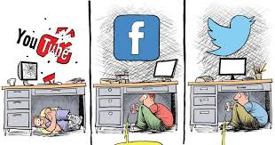

I think it tears down people's perceptions about themselves because we are brainwashed into thinking that if you get a negative comment on your picture or barely any likes your ugly. People hold others opinions in such high esteem and believe there is no other way to justify something, think about it if you are in a class and you hear your friends bragging about the amount of attention their picture just got and you're sitting there questioning your physical features as if they are a problem. Why is someone's opinion so important that you stress about it. We take a million selfies and stress ourselves out about which one is good enough, but we end up deleting it anyway because In the 29 minutes it's been up you did not get enough But we have made it into to something so toxic. Everyone is stuck with the thought that our lives are empty without likes and followers, i'm stuck thinking when did the world become this shallow my hope for the world is that people come to the realization that likes are just likes and followers are just followers and you don't need attention nor perfection.
I think it tears down people's perceptions about themselves because we are brainwashed into thinking that if you get a negative comment on your picture or barely any likes your ugly. People hold others opinions in such high esteem and believe there is no other way to justify something, think about it if you are in a class and you hear your friends bragging about the amount of attention their picture just got and you're sitting there questioning your physical features as if they are a problem. Why is someone's opinion so important that you stress about it. We take a million selfies and stress ourselves out about which one is good enough, but we end up deleting it anyway because In the 29 minutes it's been up you did not get enough But we have made it into to something so toxic. Everyone is stuck with the thought that our lives are empty without likes and followers, i'm stuck thinking when did the world become this shallow my hope for the world is that people come to the realization that likes are just likes and followers are just followers and you don't need attention nor perfection.

It’s like we're not people anymore, we have become labels and I don't know how that happened, why in this society do we have so much rules ? being yourself is taking a risk. It’s upsetting that most can’t escape and feel as if i'm a hypocrite writing this because no matter how hard I try by the end of the day i'm still gonna be on my phone trying to pass the time, it seems so simple to just put the phone down, turn it off, but these days that seems to be the hardest thing because i myself fail to realize that this is temporary and they are just sites they don't